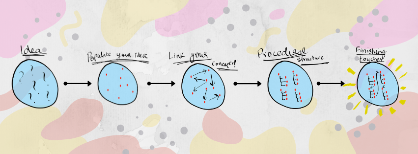
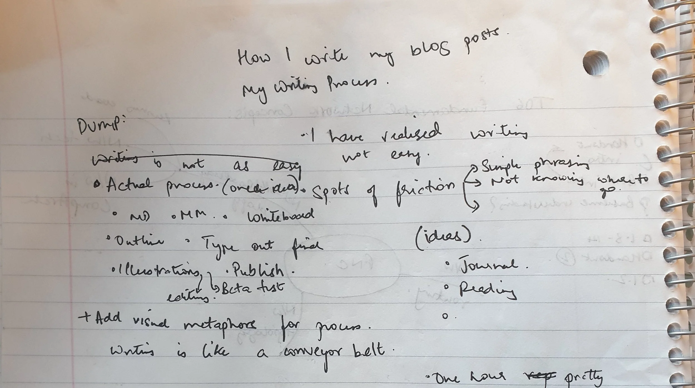
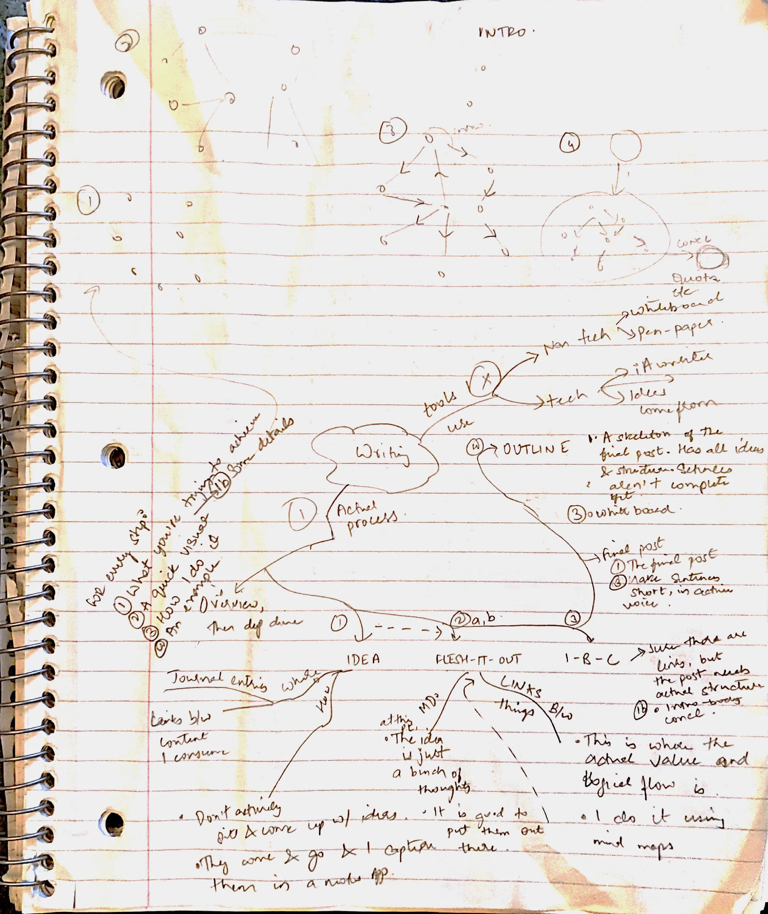
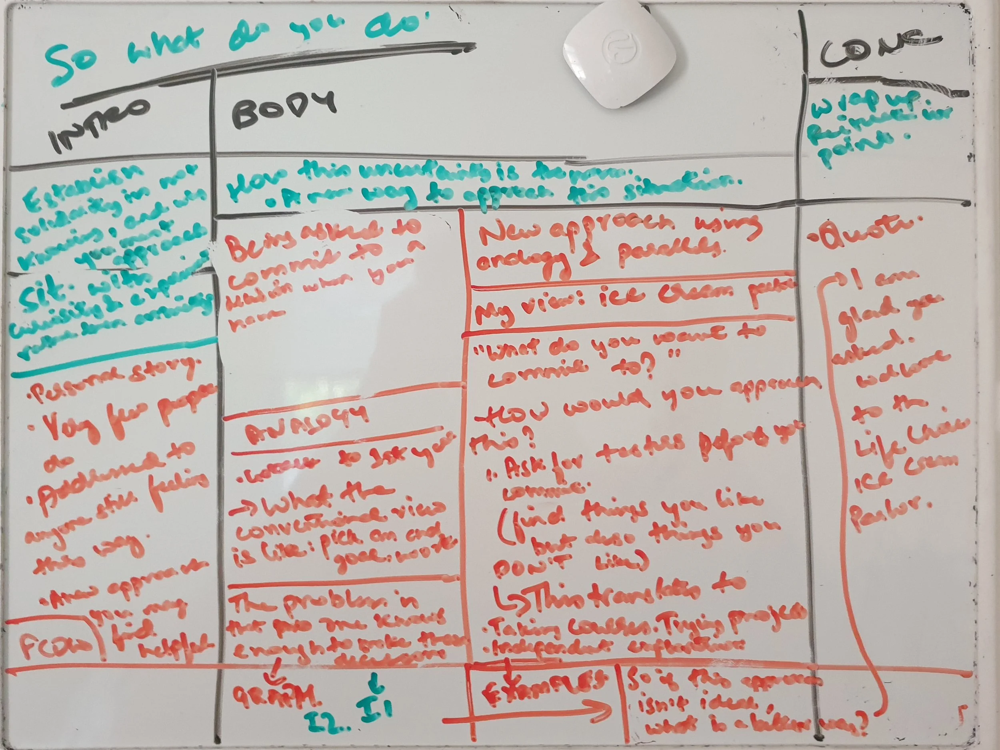

My Writing Process

My Writing Process
Writing blog posts / YouTube videos / anything creative can be a frustrating process. There is a lot of friction which can cause severe discouragement which leads to people stopping (trust me, I gave up doing YouTube videos because I just didn’t have a fun time making them anymore — and this was mostly down to the writing process). Over time, though, I’ve come up with a writing process that helps me avoid these roadblocks. It helps me take an idea and turn it into a 1000+ word post without getting overwhelmed. My goal with this post is to walk you through this process in the hopes that you find some value in it and it helps you in your writing.
In a nutshell, my process takes an abstract idea, slowly adds context and structure until I end up with something I’m happy with.
The 5 steps I go through are the following:
- Idea conception (come up with ideas and remember them)
- Mind dump (flesh out ideas)
- Mind mapping (create links between your concepts so they make logical sense)
- Outline (create structure in a written form)
- Final post (editing and filling in the gaps)
Let’s do a deep dive into each step:
1. Idea conception:
I don’t think any of us have our best ideas when we sit down and actively try to come up with them. In my experience, ideas for posts/videos/podcasts come and go at all times throughout the day when I’m travelling, showering, talking to someone or reading.
The key here is to record all your ideas and build an archive in a notes app or notebook. It’s much easier to keep writing when you have an ‘idea bank’ than it is to come up with a new idea from scratch every time – this way you never start from a blank sheet.
At this point, all you have is an idea. It’s time to populate it with some concepts and things you want to talk about.
2. Mind dump:
Once I pick an idea from my idea bank, I spend a few minutes listing out all the things I want to talk about in the post. I don’t worry about the structure or how things link together at this point. This is a simple mind dump. As an example, here’s my mind dump for this post:

Now that the idea has been populated with a few solid points of discussion, it’s time to create links between these points. Hello step 3!
3. Mind mapping:
Time to add some sort of structure! A mind map is a great way to do this. I put down all my ideas and see how they link to each other. Here’s what the mind map for this post looked like (I know the scan quality sucks… blame CamScanner):

4. Outline:
The post now has ideas and links between them, but it is still far from complete. Outlining is all about taking your mind-map and giving it procedural structure. I like to use a whiteboard and a classic intro-body-conclusion split. Here’s a whiteboard outline of my last post. It’s… messy to say the least.

A lot more can be said about what makes a good introduction and a good body, but I am in the very early stages of learning. At the end of this step, 90% of the work is done. The only thing that remains now is to write out the post in complete paragraphs and sentences. Enter step 5…
5. Final post:
I usually spend the least amount of time in this step (I get impatient). There is a lot of value in doing this slowly, though — you pay more attention to ‘cutting the fat’ out of your post and you end up with something much more cohesive. One of my favorite quotes about writing:
“I didn’t have time to write a short letter, so I wrote a long one instead.” – Mark Twain
Editing turns a post from ‘good’ to great. Again, I’m guilty of not doing this well. It helps to have someone else read through the post and help you cut down and polish your language (can you help me with this? Please help!). When I can’t get a hold of people to vet my language, I just use an online editor. It isn’t great, but it helps.
And that’s it! The post is done! If there are any illustrations or images, they go in now. Happy publishing!
My process is probably too extensive and unnecessary, but I don’t have a natural knack for writing and a set process helps. The entire process starts with a small idea to which I iteratively add context and structure until I end up with something I’m happy with. Please remember that writing is a highly subjective process – what works for me may not work for you. Regardless, the idea of slowly building out a post in tiny increments (thank you, iterative development!) works really well for me.